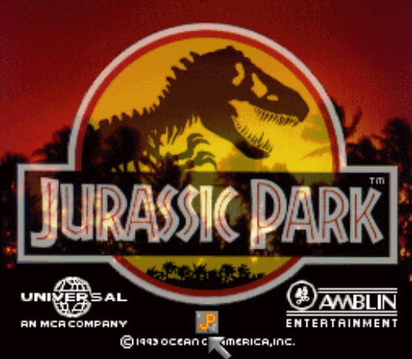

Retro Mod Island
Accueil
Projets
Téléchargements
Delta Island ↗
← Retour aux projets

Jurassic Park
Super Nintendo • 1993
MSU-1
Disponible
Infos du jeu
Vidéo
Apport du pack MSU-1
Téléchargement
Installation